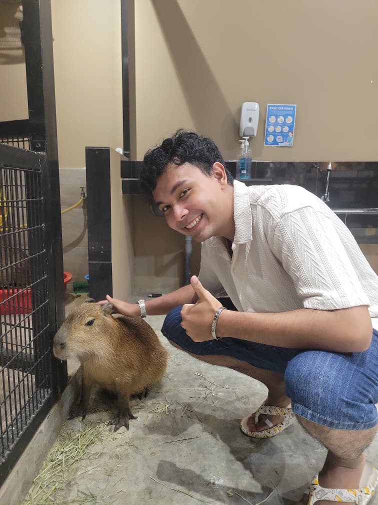

About Me

Hey, I'm Azhar, I’m someone who genuinely loves food — not just for the taste, but for the comfort, memories, and happiness it brings. Food has always been my safe space, something that can instantly lift my mood and make everyday moments feel special. When I’m not thinking about my next meal, I’m probably admiring capybaras, the chillest and most unbothered animals ever, and definitely my favourite. I’m drawn to things that feel warm, comforting, and easygoing, and that’s exactly the energy I try to bring into this blog. This is my space to celebrate simple joys, good vibes, and a whole lot of love for food.